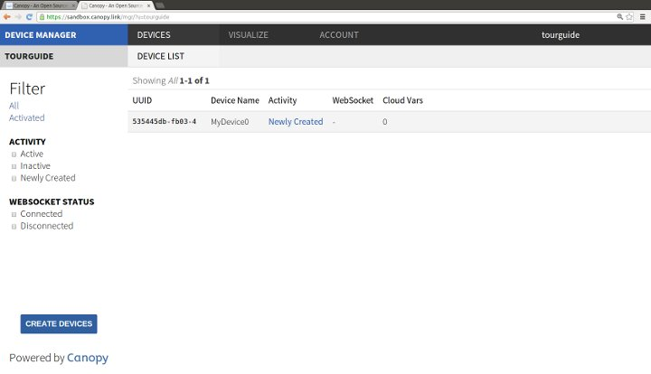
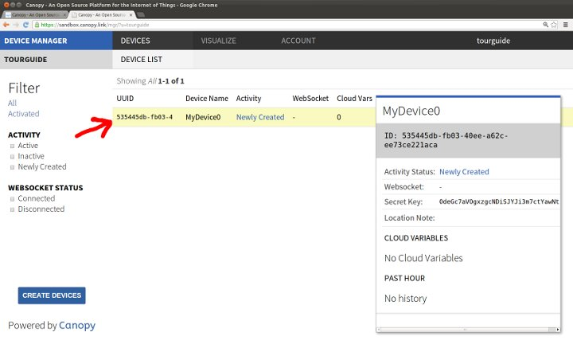
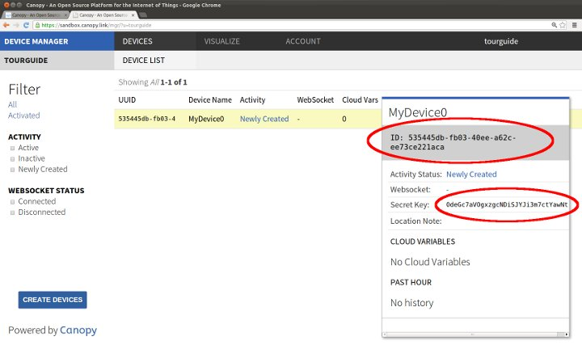

You will now see the newly created device listed.

Click on the device's row in the table to pull up details for that device.

Notice that the device's ID and Secret Key are displayed here. These
values will be needed again in a bit.
